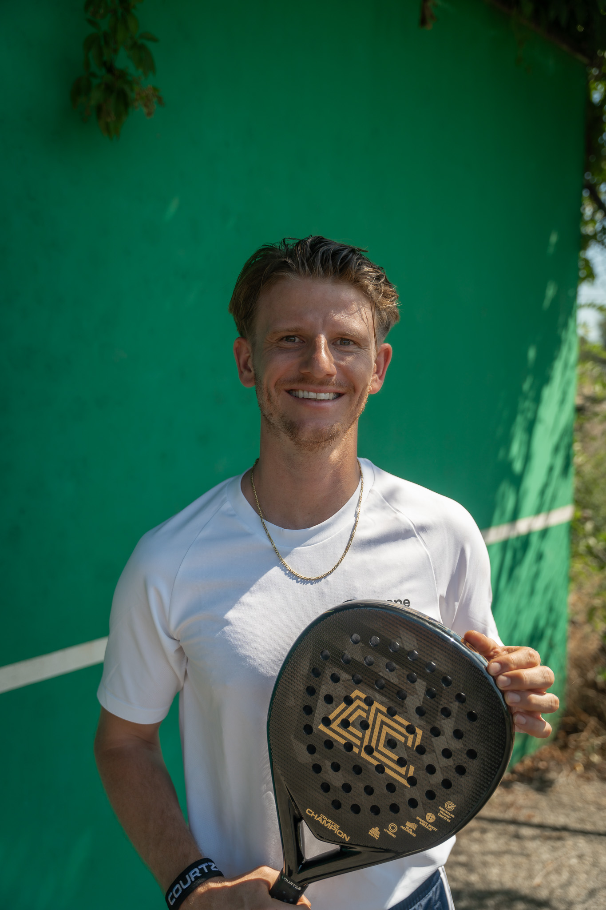

Lukas Kepser
Mit sieben Jahren begann ich mit dem Tennissport und gehörte bereits im Jugendalter (16 Jahre) zu den Top 25 Spielern Deutschlands. Seit vielen Jahren bin ich als Tennistrainer tätig und sammelte unter anderem Erfahrungen beim LTK Moyland, als Trainer der PMTR Tennisakademie, als Cheftrainer des TC Sevelen und heute beim TC Grün-Weiß Reichswalde.
Neben der C-Trainer-Lizenz im Tennis besitze ich auch die Padel-Trainerlizenz. Außerdem spiele ich regelmäßig offizielle GPS-Padelturniere, um mich sportlich stetig weiterzuentwickeln.
Mit meiner langjährigen Erfahrung im Schlägersport möchte ich Spielerinnen und Spieler individuell fördern und ihnen helfen, ihr Spiel auf das nächste Level zu bringen.